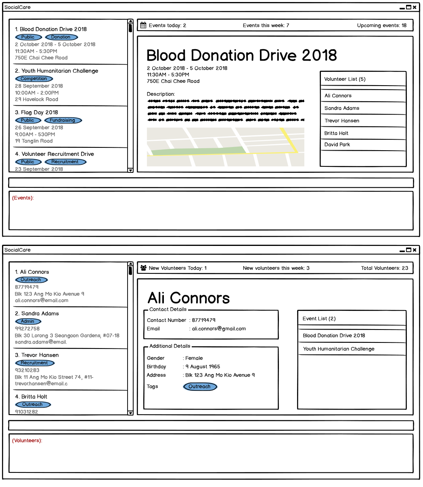

By: Team W16-2 Since: Sept 2018 Licence: MIT
1. Introduction
SocialCare morphs the given AB4 application into a volunteer management system that allows Social Welfare Organisations to better manage their volunteers & events, and gain further statistical insights from the data.
SocialCare is for organizations which prefer to use a desktop app for managing their volunteers. More importantly, SocialCare is optimized for those who prefer to work with a Command Line Interface (CLI) while still having the benefits of a Graphical User Interface (GUI). If you can type fast, SocialCare can get your volunteer and event management tasks done faster than traditional GUI apps. Interested? Jump to the Section 2, “Quick Start” to get started. Enjoy!
2. Quick Start
-
Ensure you have Java version
9or later installed in your Computer. -
Download the latest
socialcare.jarhere. -
Copy the file to the folder you want to use as the home folder for SocialCare.
-
Double-click the file to start the app. The GUI should appear in a few seconds.
 -
Type the command in the command box and press Enter to execute it.
e.g. typinghelpand pressing Enter will open the help window. -
Refer to Section 3, “Features” for details of each command.
3. Features
Command Format
-
Words in
UPPER_CASEare the parameters to be supplied by the user e.g. inadd n/NAME,NAMEis a parameter which can be used asadd n/John Doe. -
Items in square brackets are optional e.g
[n/NAME]. -
Items with
… after them can be used multiple times including zero times e.g.[t/TAG]…can be used ast/charity,t/charity t/helpetc. -
Parameters can be in any order e.g. if the command specifies
n/NAME p/PHONE_NUMBER,p/PHONE_NUMBER n/NAMEis also acceptable.
3.1. General Commands
3.1.1. Viewing help : help
Format: help
3.1.2. Listing entered commands : history
Lists all the commands that you have entered in reverse chronological order.
Format: history
|
Pressing the ↑ and ↓ arrows will display the previous and next input respectively in the command box. |
3.1.3. Undoing previous command : undo
Restores the system to the state before the previous undoable command was executed.
Format: undo
|
Undoable commands: those commands that modify the system’s content ( |
Examples:
-
delete 1
list
undo(reverses thedelete 1command) -
select 1
list
undo
Theundocommand fails as there are no undoable commands executed previously. -
delete 1
clear
undo(reverses theclearcommand)
undo(reverses thedelete 1command)
3.1.4. Redoing the previously undone command : redo
Reverses the most recent undo command.
Format: redo
Examples:
-
delete 1
undo(reverses thedelete 1command)
redo(reapplies thedelete 1command) -
delete 1
redo
Theredocommand fails as there are noundocommands executed previously. -
delete 1
clear
undo(reverses theclearcommand)
undo(reverses thedelete 1command)
redo(reapplies thedelete 1command)
redo(reapplies theclearcommand)
3.1.5. Clearing all entries : clear
Clears all entries from the volunteers or events, depending on context.
Format: clear
3.1.6. Exiting the program : exit
Exits the program.
Format: exit
3.1.7. Switching context : switch
Switches context to volunteers or events
Format: switch
Examples:
-
switch -e
Switches to the event context -
switch -v
Switches to the volunteers context
3.2. Volunteer Management
3.2.1. Register new volunteer: add
Adds a volunteer to the system when in the volunteers context
Format: add n/NAME b/BIRTHDAY g/GENDER a/ADDRESS e/EMAIL p/PHONE_NUMBER [t/TAG]…
Examples:
-
add n/John Doe b/05-08-1995 g/M a/Yishun Block 62 p/87183749 e/John@gmail.com -
add n/Betty Sue b/31-12-1995 g/M a/Ang Mo Kio Block 62 p/81749272 e/Betty@gmail.com t/Longtime t/Helpful
3.2.2. Listing all volunteers : list
Lists all volunteers in the system when in the volunteers context.
Format: list
3.2.3. Editing volunteers details : edit
Edit details of an existing volunteer in the system when in the volunteers context.
Format: edit INDEX [n/NAME] [b/BIRTHDAY] [g/GENDER] [a/ADDRESS] [e/EMAIL] [p/PHONE_NUMBER] [t/TAG]…
Examples:
-
edit 1 n/John Doe
Edits the name of the volunteer at index 1
3.2.4. Deleting volunteer details : delete
Deletes details of an existing volunteer in the system when in the volunteer context.
Format: delete INDEX
Examples:
-
delete 1
Deletes the details of the volunteer specified at index 1
3.3. Event Management
3.3.1. Add new event: add
Adds an event to the system when in the event context
Format: add n/NAME l/LOCATION sd/START_DATE ed/END_DATE d/DESCRIPTION [t/TAG]…
Examples:
-
add n/Flag Day l/Yishun MRT S sd/31-10-2018 ed/31-10-2018 d/For the children’s home -
add n/Fundraising l/Tampines S sd/31-09-2018 ed/31-09-2018 d/Raising funds t/fundraiser t/charity
3.3.2. Listing all events : list
Lists all events in the system when in the events context.
Format: list
3.3.3. Editing event details : edit
Edit details of an existing event in the system when in the event context.
Format: edit INDEX [n/NAME] [l/LOCATION] [sd/START_DATE] [ed/END_DATE] [d/DESCRIPTION] [t/TAG]…
Examples:
-
edit 1 n/Charity Fun Run t/
Edits the name of event at index 1 and removes all tags
3.3.4. Deleting event details : delete
Deletes details of an existing event in the system when in the event context.
Format: delete INDEX
Examples:
-
delete 1
Deletes the details of the event specified at index 1
3.4. Record Management
3.4.1. View event’s volunteer records: manage
Switches context to event and display volunteers at the side bar. Can only be executed in event context.
Format: manage EVENT_INDEX
Examples:
-
manage 1
View the list of volunteers assigned to event at index 1
3.4.2. Add volunteer to event: add
Adds a volunteer to the event that is currently being managed.
Format: add VOLUNTEER_INDEX [h/HOURS] [r/REMARKS]
Examples:
-
add 1
Adds a volunteer at index 1 to the event with 0 hours -
add 1 r/Vegetarian
Adds a volunteer at index 1 to the event with 0 hours with remarks of 'Vegetarian' -
add 3 h/5
Adds a volunteer at index 3 to the event with 5 hours
3.4.3. Update volunteer hours: edit
Update number of hours for volunteer in the event that is currently being managed.
Format: edit [-a] [VOLUNTEER_INDEX] h/HOURS [r/REMARKS]
Examples:
-
edit -a h/5
Updates amount of hours volunteered for all existing volunteers in the event to 5 hours -
edit 3 h/5 r/Emcee
Updates amount of hours volunteered for volunteer at index 3 to 5 hours with remarks of 'Emcee'
3.4.4. Delete volunteer record from event: delete
Deletes the volunteer record from the event that is currently being managed.
Format: delete VOLUNTEER_INDEX
Examples:
-
delete 1
Deletes the volunteer record of the volunteer at index 1.
3.5. Miscellaneous
3.5.1. Saving the data
SocialCare data are saved in the hard disk automatically after any command that changes the data.
There is no need to save manually.
3.5.2. Encrypting data files [coming in v2.0]
{explain how the user can enable/disable data encryption}
4. FAQ
Q: How do I transfer my data to another Computer?
A: Install the app in the other computer and overwrite the empty data file it creates with the file that contains the data of your previous SocialCare folder.
5. Commands Summary
5.1. General Commands
-
Help :
help -
Clear :
clear -
History :
history -
Undo :
undo -
Redo :
redo -
Exit :
exit -
Switching Context :
switch
e.g.switch -e
5.2. Volunteer Management
-
Add
add n/NAME b/BIRTHDAY g/GENDER a/ADDRESS e/EMAIL p/PHONE_NUMBER [t/TAG]…
e.g.add n/John Doe b/05-08-1995 g/M a/Yishun Block 62 p/87183749 e/John@gmail.com -
List :
list -
Edit :
edit INDEX [n/NAME][b/BIRTHDAY] [g/GENDER] [a/ADDRESS] [e/EMAIL] [p/PHONE_NUMBER] [t/TAG]…
e.g.edit 2 n/James Lee e/jameslee@example.com -
Delete :
delete INDEX
e.g.delete 3
5.3. Event Management
-
Add
add n/NAME l/LOCATION sd/START_DATE ed/END_DATE d/DESCRIPTION [t/TAG]…
e.g.add n/Fundraising l/Tampines S sd/31-09-2018 ed/31-09-2018 d/Raising funds t/fundraiser t/charity -
List :
list -
Edit :
edit INDEX [n/NAME] [l/LOCATION] [sd/START_DATE] [ed/END_DATE] [d/DESCRIPTION] [t/TAG]…
e.g.edit 2 n/Fundraiser -
Delete :
delete INDEX
e.g.delete 3
5.4. Record Management
-
Manage
manage EVENT_INDEX
e.g.manage 1 -
Add
add [h/HOURS] VOLUNTEER_INDEX…
e.g.add h/5 1 2 3 -
Edit
edit [-a] h/HOURS [VOLUNTEER_INDEX]…
e.g.edit h/5 1 2 3 -
Delete
delete VOLUNTEER_INDEX
e.g.delete 1